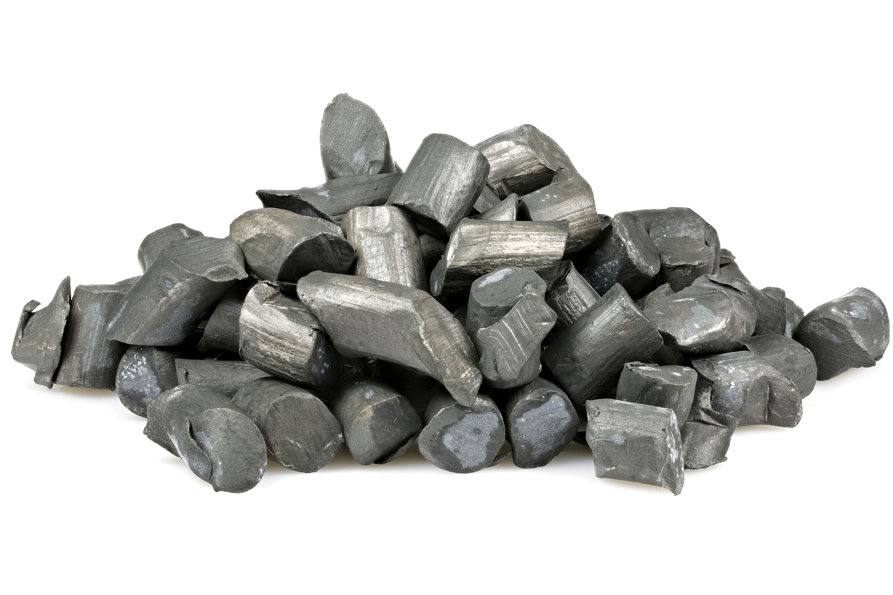

WITH THE
PRESIDENT OF
DR CONGO
WITH MINISTER
OF NATIONAL
ECONOMY OF
DR CONGO

WITH THE PRESIDENT OF OUGANDA
SOCOREP WORLD BUSINESS LIMITED is a trading, procurement and
supply company with world class capabilities.
We trade abroad spectrum of commodities across agriculture, metal and energy markets and have strong partnerships with the world’s leading suppliers.
Alongside trading commodities, we are a specialised multidisciplined procurement and supply company, delivering a complete single source procurement solution to our customers worldwide. We supply all types of machinery, equipment and materials for construction, infrastructure, production and manufacturing, mining, transportation, healthcare, energy, municipal, industrial and many more sectors. Our team of experienced professionals tailor solutions to assist customers with their specific requirements, ensuring products and good scan be purchased on the terms that best match their business cycles.
We serve our customers from offices located in Kenya, Democratic Republic of Congo, Uganda, Cameroon and Ghana approaching each relationship with a view to creating long-term and sustained partnerships built on the shared values of trust and consistency.
To provide essential value to your supply chain in order to advance and
overcome the obstacles of doing international trade.
Affirming our reputation as general trading company, SOCOREP GROUP has built dedicated Commodities Trading and Procurement & Supply divisions to source and deliver commodities and capital equipment to any destination.
✓ Advanced solutions ✓ Ethical sourcing ✓ Adding value to customers ✓ Tailored solutions Efficient ✓ Fast delivery ✓ Due diligence
SOCOREP GROUP operates in Six countries and has offices strategically located to service clients in each country. Proven track record based on diligence, efficiency and integrity. Global footprint and on-ground presence in key markets. Established relationships and large network of partners. Resilient balance sheet International management team with extensive market experience. Strong market position at the intersect of commerce, trade and finance. Partnerships and affiliations with Government entities.
•Long-standing relationships with suppliers and customers
• Extend credit for suppliers and buyers
• Effective risk management of currency and price
• Lean organisation with experienced team, adept at problemsolving
and decision-making
• In-depth knowledge of our customers and operational markets
•Global access to products, materials and equipment
• Long-standing relationships with a wide network of partners, OEMs and principal vendors
• Attractive terms & solutions
• Highly skilled team, experienced in global markets
• Deep knowledge of multiple industries
• Expertise in developing the spoken solutions for any situation or environment
• Accomplished in RFQ management
Since its creation, SOCOREP GROUP has established itself as a reference in strategy consulting and business assistance in the Democratic Republic of Congo, Kenya, South Africa, Cameroon,Uganda and also Ghana. This success has been built on a unique approach to general management issues based on a factual and rigorous methodology, the permanent sharing of the experience accumulated by all of our offices and multidisciplinary teams trained in the best training schools.
Do you want to develop your activities in the Democratic Republic of Congo, Kenya, South Africa, Cameroon, Uganda or Ghana? Do you want to buy goods or products in the Democratic Republic of Congo, Kenya, South Africa or Ghana? Do you want to get in touch with the government or the CONGOLESE, hierarchy ? Do you want to invest in the Democratic Republic of Congo, Kenya, South Africa or Ghana? Think no more? SOCOREP GROUP is a local ally who will assist you with all the plans and your integral integration into Congolese territory and its market potential.
WITH THE
PRESIDENT OF
DR CONGO
WITH MINISTER
OF NATIONAL
ECONOMY OF
DR CONGO
WITH THE PRESIDENT OF OUGANDA


Financing
Tailored Supply Chain
Solutions

Commodities
Principle focus
on agriculture,
metals(ferrous and
nonferrous) and energy

Capital Equipment
Broad
spectrum supplier
of equipment for
construction, engineering,
mining and transportation
SOCOREP GROUP possesses a highly skilled and experienced Commodities Trading team and is witnessing substantial growth in this area of our business. We trade in agriculture (wheat, grain), energy (crude, gasoline, diesel) and metals(copper, aluminium, gold) and also mienarals as coltan, lithium, diamond and general commerce import and export.
We believe in adding value to our customers across all points of the supply chain process and pride ourselves on our efficient, professional and customer centric services.

Gold

coltan
copper

Lithium
Diamond
aluminium
SOCOREP GROUP Procurement and Supply division specialises in delivering complete, single in source procurement solutions to our customers worldwide. Our experienced team has developed strong relationships with global suppliers, enabling us to source and supply an extensive range of high quality products, materials and equipment. We can create customised solutions and procure even the most specialised items, whilst efficiently managing the supply chain process from start to end. We operate across multiple industries and markets worldwide. We thrive on delivering innovation, service excellence and high quality solutions that in enable our customers to successfully complete their projects.
SOCOREP GROUP provides the Supply Chain Solutions for corporates. In integration with our commodities and procurement operations, solutions enable us to provide comprehensive trade solutions to our customers.
Through our experienced financial trade team, we can tailor Supply Chain Solutions to our customer’s cash conversion cycle, in the process mitigating the financial challenges they may face from the suppliers payment terms and strengening their financial position in the longterm.
There are two methods by which customers can avail our Supply Chain Credit Solutions, one, by allowing SOCOREP GROUP to be the supplier or, two, by integrating SOCOREP GROUP into their existing supply chain and allowing us to deal with their preferred supplier.
SOCOREP GROUP operates on core values that extend beyond the boardroom. We believe it is our responsibility to make a difference and to enrich the lives of people in our communities across the globe
We are ethically and environmentally considerate in our operations and uphold the highest partner standards. We embrace those activities that have a positive impact on society, the environment and the economy.
Our initiatives are growing year after year. We have already helped community projects in Democratic Republic of Congo Kenya, South Africa, Uganda and Ghana and continue to provide ongoing support to them. We are dedicated to sponsoring worthy endeavours in our communities and are always seeking projects that offer us a chance to make a long-term ommitment and a lasting

31 years of trade and trade
finance experience.
Holder of Master's degree in economics.
SAIDOU SOUAIBOU is a lobbyist and international consultant specializing
in supporting large companies and governments
Africans, with American and European public authorities,
particularly in the field of politics, diplomacy and law.
Before creating his SOCOREP WORLD BUSINESS LIMITED office, he was
for several years, private adviser to several senior
African personalities, and consultant for some institutions in
West where he was more specifically in charge of business
administrative.
Saidou began his career as a broker in the firm of the deceased
Ahmadou Ahidjo, very first President of the Republic of Cameroon,
He has assisted many companies and worked with important
institutions, in particular to promote their access to the European market
and American.
SOCOREP PTY (LTD), South Africa 48 Valda Street Rosettenville, JHB 2190
Mobile: +27633888806
SOCOREP-WORLD BUSINESS (LTD), KENYA:Address: NA, BODER POINT APARTMENTS,
WESTLANDS
P.O. Box 26181-00100
Mobile:+254 797979245, +254 743720373
NEGOCE WORLD BUSINESS (LTD), GHANA: 222, Main McCarthy HILL Road, McCarthy Hill, Accra Mobile:+233 242063850
Monday-Friday 8 Am - 5 Pm